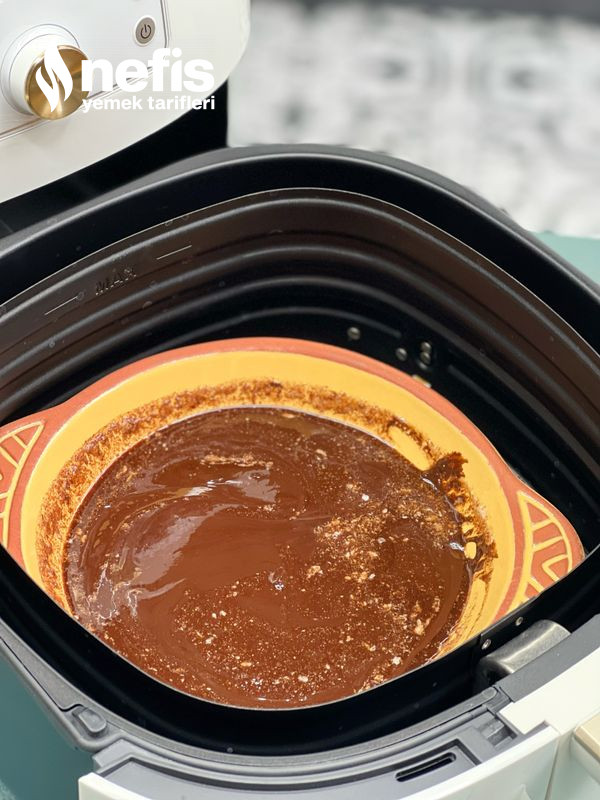
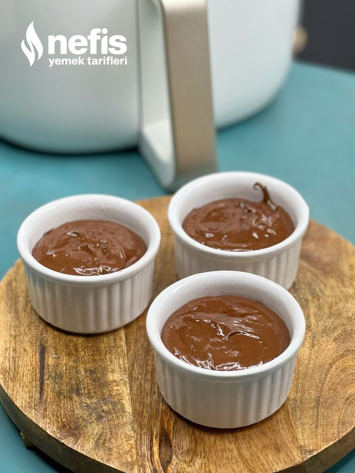
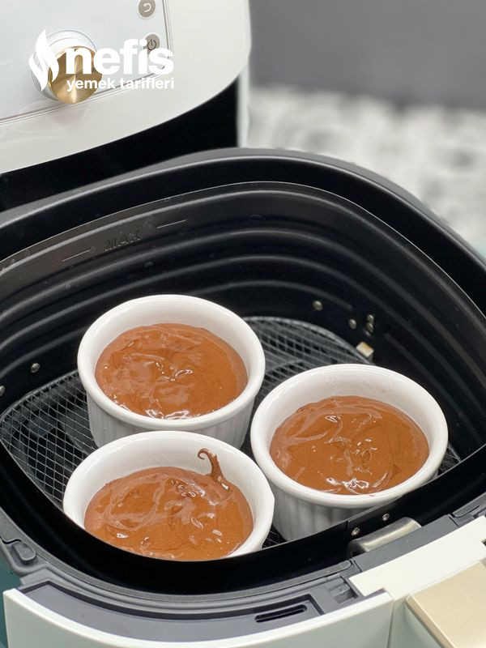
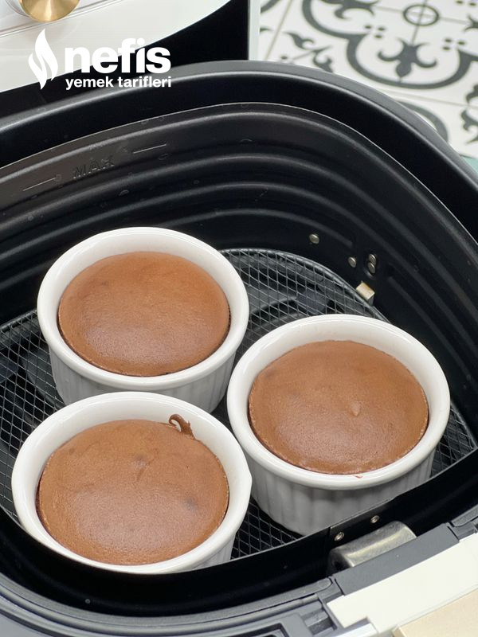
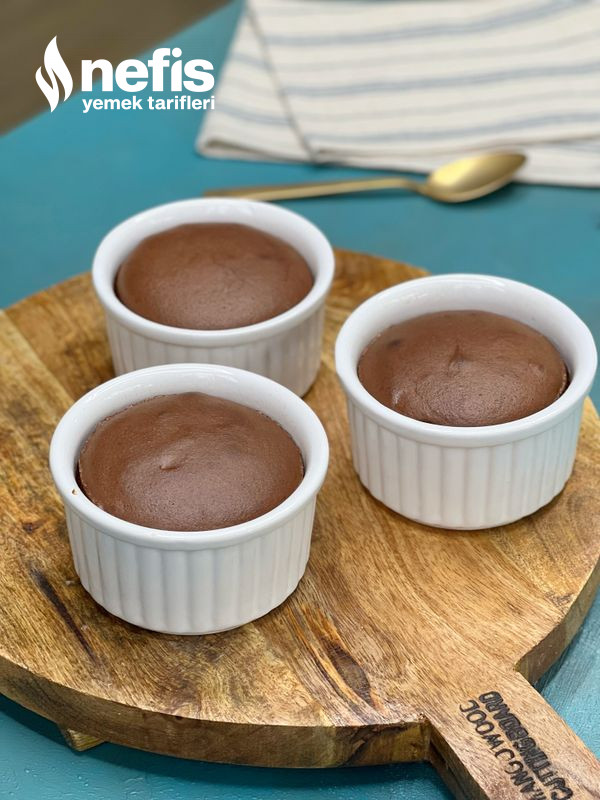
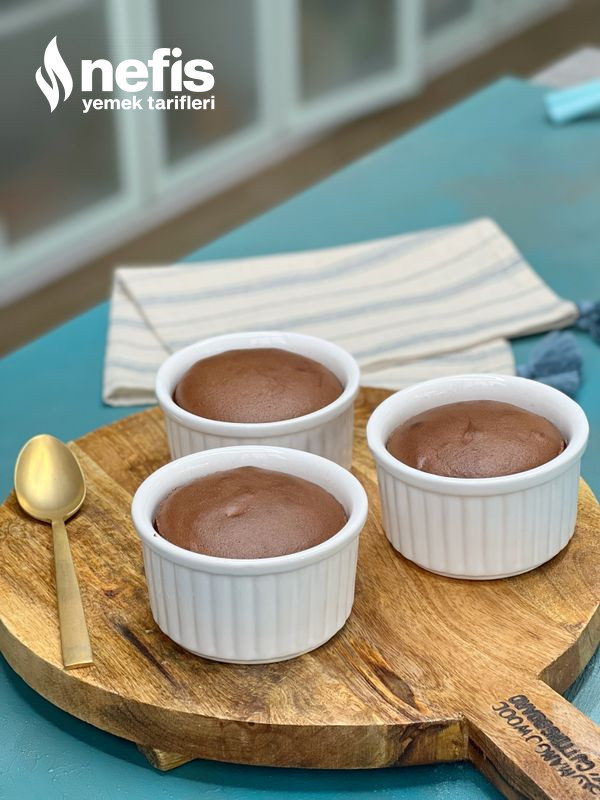
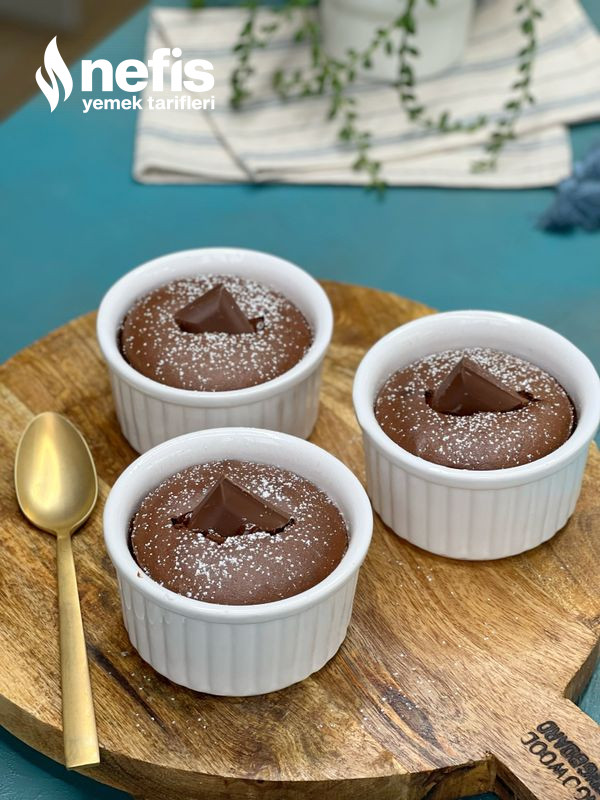

Tarifin Hşkayesi
Airfryer’da sufle nasıl yapılır, ben de denemek istedim ve sanırım bu tariften sonra bir daha fırında sufle yapmayacağım :) Hem çok pratik oldu hem de 3 tane kap için koca fırını önceden çalıştırıp ısıtmaya gerek kalmadı. Açıkçası çoğunlukla sırf fırın çalıştırmamak için sufle yapmaktan vazgeçerdim. Bu tarif çok hoşuma gitti :) canınız tatlı istediğinde en fazla 7-8 dakikada hazır, dilerseniz hemen başlayalım.
Airfryer Sufle Tarifi İçin Malzemeler
- 2 paket bitter çikolata
- 3 yumurta
- Yarım su bardağı un
- Yarım su bardağı şeker
- 1 çimdik tuz
- 50 gram tereyağı
Airfryer Sufle Tarifi Nasıl Yapılır?
- Çikolatalı sufle için öncelikle tereyağını eritip içine çikolata parçalarını ekleyip çikolatalar eriyinceye kadar karıştıralım. Bu işlemi bir kaç şekilde yapabilirsiniz. Örneğin tavada yağı eritip ocağı en kısığa alıp veya kapatıp çikolataları da eritebilirsiniz. Veya mikrodalga fırında eritebilirsiniz. Veya da airfryer de 100 derecede 2-3 dakikada eritmeniz mümkün.
- Çırpma kabında yumurtalar ve şekeri bir çimdik tuzla iyice köpük köpük oluncaya kadar çırpalım.
- İçerisine eriyen tereyağlı çikolata (çok sıcak olmasın, gerekirse ılımasını bekleyin) ve unu ekleyip tekrar çırpalım.
- Sufle kaplarının içini çok az tereyağı ile yağlayalım.
- Hamuru kaplara boşaltalım. Benim kaplarım büyük biraz, bu ölçü ile 3 kap dolusu çıkıyor fazla fazla, eğer orta boy kap ile yaparsanız 4 kişi için rahatlıkla yeterli gelecektir.
- Sufle kaplarını airfryer ızgarası üzerine yerleştirelim. Benim kullandığım model philips xxl airfryer, pişme süresini ve sıcaklığı kendi airfryerıma göre veriyorum, artık çok farklı modeller var, siz kendinize göre gerekirse değiştirebilirsiniz. 190 derecede 5 dakika pişmeye bırakalım. İlk 4. Dk da gerekirse bir açıp hızlıca bakabilirsiniz, üzeri kabuklanmış ve pişmişse hazır demektir. Zaten içinin akışkan kalmasını istiyoruz. Pişme süresi kapların büyüklüğüne veya airfryer modeline göre farklılık gösterebilir.
- Sufleleri sıcağıyla servis edelim. Ben üzerine az pudra şekeri serpip birer parça çikolata batırdım. Dilerseniz bir top dondurma ile de servis edilebilir. Şimdiden herkese afiyet olsun :)
Not; dilerseniz tarifi aynı şekilde hazırlayıp fırında da pişirebilirsiniz. Ancak fırını ön ısıtma yapmayı unutmayın ve pişme süresi de 8-9 dakika civarı olabilir. Tercih sizin.
Airfryer Sufle Tarifi Fotoğraflı Yapılışı
- 
- 
- 
- 
- 
- 
- 